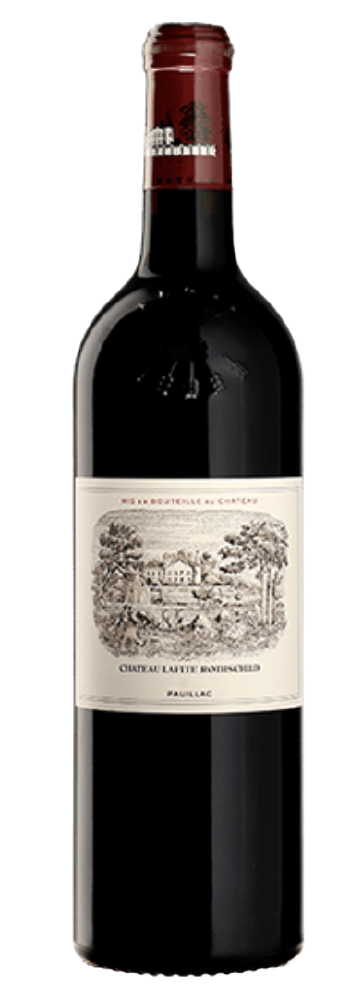

Prodotto da uno dei più prestigiosi château del
Médoc, il Château Lafite Rothschild è un vino rosso
di fama mondiale, nato da un blend raffinato di
Cabernet Sauvignon, Merlot e Cabernet Franc.
Profuma di ribes nero, grafite, cuoio e legno nobile,
con una complessità che si sviluppa magnificamente
nel tempo. In bocca è sontuoso ma finemente
equilibrato, con una struttura nobile e tannini
vellutati.
Simbolo di eleganza e perfezione enologica francese,
Lafite Rothschild è il risultato di secoli di esperienza,
cura maniacale in vigna e una vinificazione precisa,
che lo rendono una vera icona del vino.
